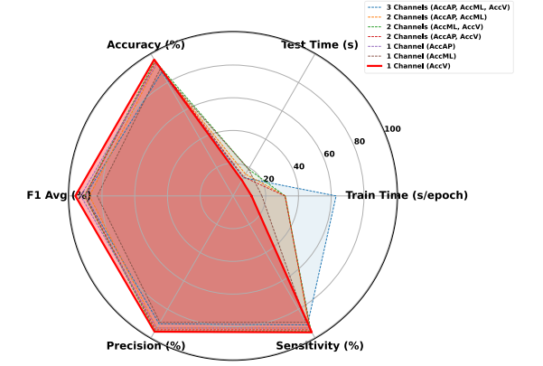

FOGSense
Freezing of Gait Detection Using Gramian Angular Fields and Federated Learning from Wearable Sensors
Shovito Barua Soumma 1, S M Raihanul Alam 2 *, Rudmila Rahman 3 *, Umme Niraj Mahi 4, Abdullah Mamun 1,5, Sayyed Mostafa Mostafavi 1, Hassan Ghasemzadeh 1†
1 College of Health Solutions, Arizona State University, Phoenix, AZ, USA
2
Department of CSE, Bangladesh University of Engineering and Technology, Dhaka, Bangladesh
3
Department of EEE, Bangladesh University of Engineering and Technology, Dhaka, Bangladesh
4 Department of CSE, Khulna University of Engineering and Technology, Khulna, Bangladesh
5 School of Computing and Augmented Intelligence, Arizona State University, Phoenix, AZ, USA
†
Corresponding to hassan.ghasemzadeh@asu.edu*
Equal Contribution arXiv Code Dataset ResultsFigure 1: System architecture illustrating the federated learning workflow: local models are trained and uploaded by devices, then aggregated into a global model, which is distributed back to each device.
Abstract
Freezing of gait (FOG) is a debilitating symptom of Parkinson's disease (PD) that impairs mobility and safety. Traditional detection methods face challenges due to intra and inter-patient variability, and most systems are tested in controlled settings, limiting their real-world applicability. Addressing these gaps, we present FOGSense, a novel FOG detection system designed for uncontrolled, free-living conditions. It uses Gramian Angular Field (GAF) transformations and federated deep learning to capture temporal and spatial gait patterns missed by traditional methods. We evaluated our FOGSense system using a public PD dataset, 'tdcsfog'. FOGSense improves accuracy by 10.4% over a single-axis accelerometer, reduces failure points compared to multi-sensor systems, and demonstrates robustness to missing values. The federated architecture allows personalized model adaptation and efficient smartphone synchronization during off-peak hours, making it effective for long-term monitoring as symptoms evolve. Overall, FOGSense achieves a 22.2% improvement in F1-score compared to state-of-the-art methods, along with enhanced sensitivity for FOG episode detection.
System Overview
Core Functionality
- Multi-channel CNN for FOG detection
- Federated learning with weighted averaging
- GAF transformation of accelerometer data
Resource Monitoring
- Real-time tracking of:
- CPU utilization
- Memory usage
- GPU utilization and memory
- Training metrics
Figure 2: GAF-transformed images for No-FOG, FOG conditions, and the differences between them. Significant differences are highlighted with red boxes.
Dataset & Methodology
We used the publicly available PD dataset from the TLVMC FOG prediction competition. The dataset has 62 subjects diagnosed with Parkinson's disease, specifically focusing on FOG episodes. The analysis concentrated on the 'tdcsfog' dataset. Data were collected via a lower-back triaxial accelerometer at 128 Hz, capturing vertical (AccV), mediolateral (AccML), and anteroposterior (AccAP) movements, critical for identifying directional mobility loss during FOG events.

Figure 3: Class distribution normal and FOG events before and after applying Differential Hopping Windowing Technique (DHWT).
Dataset Split
- 62 subjects split:
- Training: 69.4%
- Testing: 19.4%
- Validation: 11.3%
Pre-processing
- Downsampled from 128Hz to 64Hz
- 4-second time windows
- Differential Hopping Windowing Technique (DHWT)
- Mean value subtraction for normalization
Model Architecture
Figure 4: The multichannel CNN architecture.
Model Structure
- Three CNN branches (AccV, AccML, AccAP)
- Each branch:
- 3 Conv2D layers (32->64->128 filters)
- Batch normalization
- MaxPooling and Dropout
- Dense layers: 128->64->2
- Softmax output
Results
| Detection Type | Configuration | Accuracy (%) | F1 (%) |
|---|---|---|---|
| Window-level (DFW) | All Channels | 87.23 | 90.31 |
| Episode-level (DFE) | All Channels | 87.23 | 90.86 |
| Federated Learning | All Channels | 86.98 | 90.47 |
Table 1: FOGSense's performance for three different detection types using all three channels.
Figure 5: Comparison of channel configurations in the FOGSense system shows that the vertical axis (AccV) obtains a better F1 score than other channel choices.
| Study | DFE | SEN (DFW) | PRE | F1 |
|---|---|---|---|---|
| One Class Classifier | 90.8% | 71.6% | 0.86 | 0.77 |
| Semi-Supervised Model | - | 72.3% | - | - |
| Multi-head CNN | 97.3% | 94.6% | 0.56 | 0.68 |
| LIFT-PD | 88% | 84% | 0.74 | 0.79 |
| FOGSense | - | 96.3% | 0.958 | 0.963 |
Table 2: FOGSense vs. state-of-the-art on tdcsfog.
Conclusion
Accurate detection of freezing of gait (FOG) can significantly enhance early intervention strategies, improve mobility support, and ultimately contribute to a better quality of life for individuals with Parkinson's disease. Our FOGSense system uses Gramian Angular Field (GAF) imaging, convolutional neural networks (CNN), and federated learning to ensure accurate and resource-efficient FOG detection in an uncontrolled environment. Moreover, FOGSense is robust to sensor failure as it needs only one channel to make an accurate prediction and it can delegate the prediction task to a different single-channel model by dynamic weight transfer in case of a channel failure.
Our work establishes a foundation for efficient, practical, and reliable FOG detection systems. We provide new insights into lightweight, single-channel solutions that outperform state-of-the-art multi-channel solutions. We also identified future research directions that could advance the field, from alternative data representations to federated learning enhancements and real-world validations. This study highlights the potential of FOGSense and opens avenues for refining FOG detection systems to meet clinical and practical demands more effectively.
Cite Us
@article{soumma2024fogsense,
title={Freezing of Gait Detection Using Gramian Angular Fields and Federated Learning from Wearable Sensors},
author={Soumma, Shovito Barua and Alam, S M Raihanul and Rahman, Rudmila and Mahi, Umme Niraj and Mamun, Abdullah and Mostafavi, Sayyed Mostafa and Ghasemzadeh, Hassan},
journal={arXiv preprint arXiv:2411.11764},
year={2024}
}